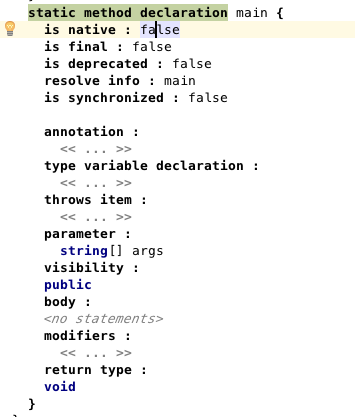

Right click on any node (including the diff view) and choose Show Reflective Editor. The reflective editor, which structurally lists all nodes' properties, children and references, will be shown. It allows you toe edit the model directly, without the intervention of an editor. Hitting F5 will quickly restore the editors back.
